开心果 Need Car · 2023-07-14T09:14:00+08:00 · 微信原文
bug解决过程中，常需要分析两种数据：总线数据和标定数据。总线数据有：CAN、Lin、Flexray、Ethernet等，由于总线类型的不同，因此，总线的数据格式也多种多样，eg：*.blf、*.asc等等。当然，标定数据也会因总线类型/工具的不同，有多种保存格式，eg：*.mf4、*.dat等等。
控制器通过总线，将接收到的数据输入给内部参数（Input Argument，对应下图的1部分），算法对输入参数处理后进行输出控制，而输出的参数（Output Argument）需要通过总线将信息输出给其他节点或者执行器，对应下图的2部分。对于1、2两部分数据的变化，可以通过总线报文分析其变化情况。但是对于不在总线传输的一些内部变量（Internal Argument），如果想观测其变化状态，则需要借助标定工具，通过标定的方式观测，对应下图的3部分。
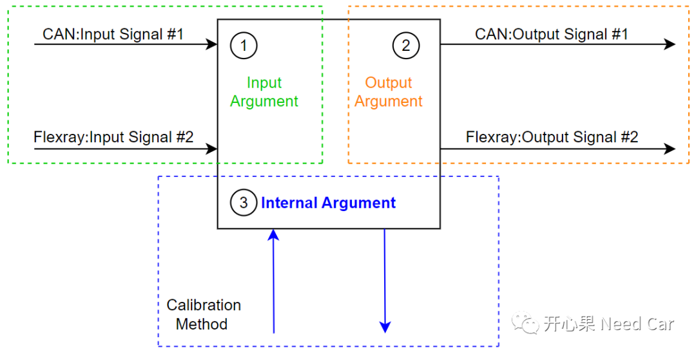
所以，通过标定方式，观测一些内部数据的变化，也是排查问题的一种手段。当获取到标定数据log后，分析是必不可少的一步。工程上，采集标定数据，经常用INCA或者CANape，本文先给出INCA数据分析的基本操作。
提示：本文分析INCA录取的*.dat文件
1、INCA分析*.dat文件常用操作
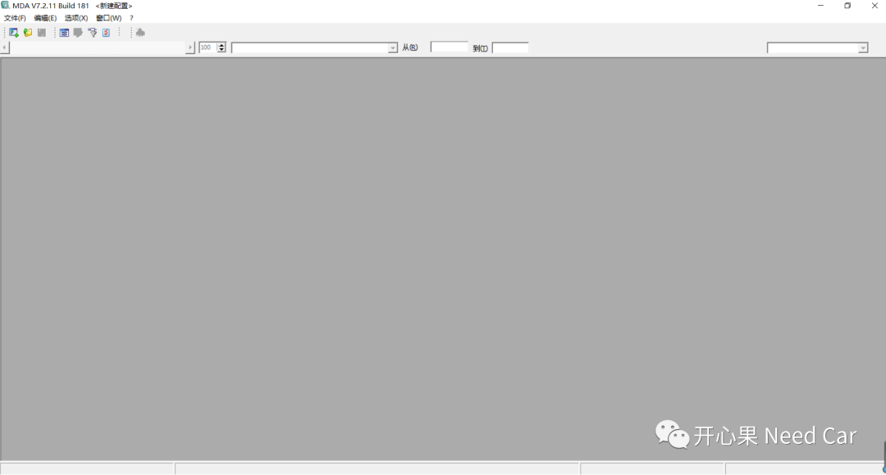
2、文件->打开并配置（O）......
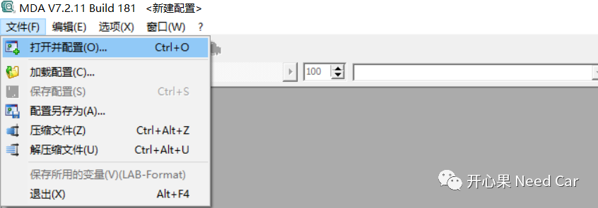
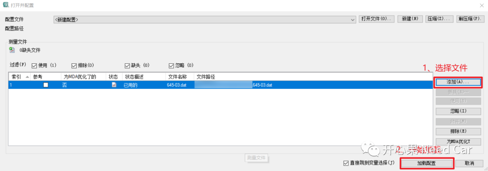
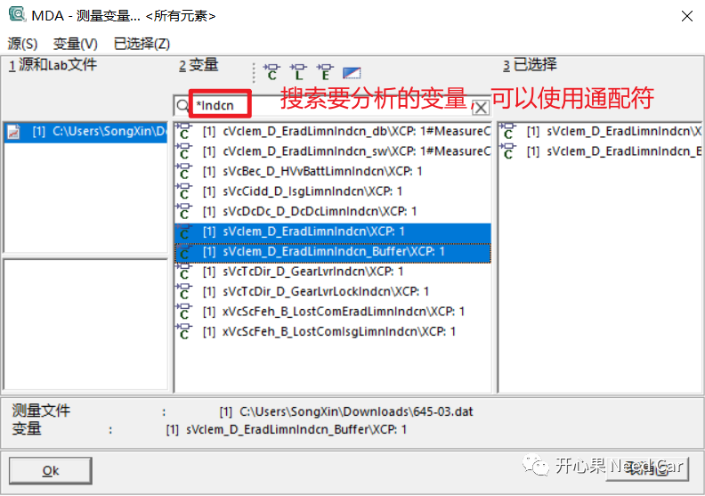
2、选择“新建示波器”->OK
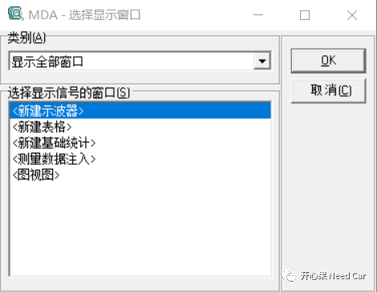
3、选择“信号轴”->OK
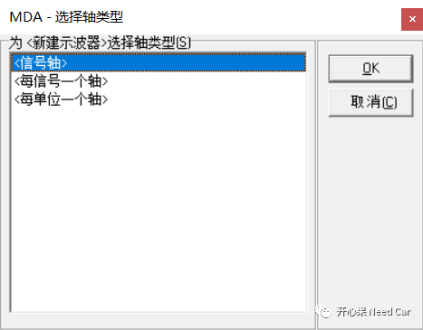
4、分析界面如下所示
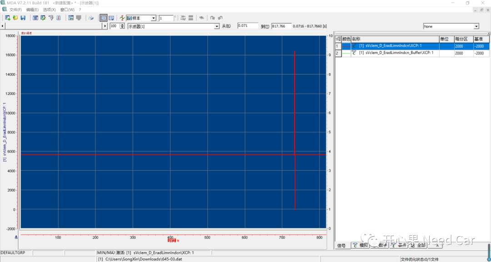
2、数据分析常用操作
（一）示波器配置
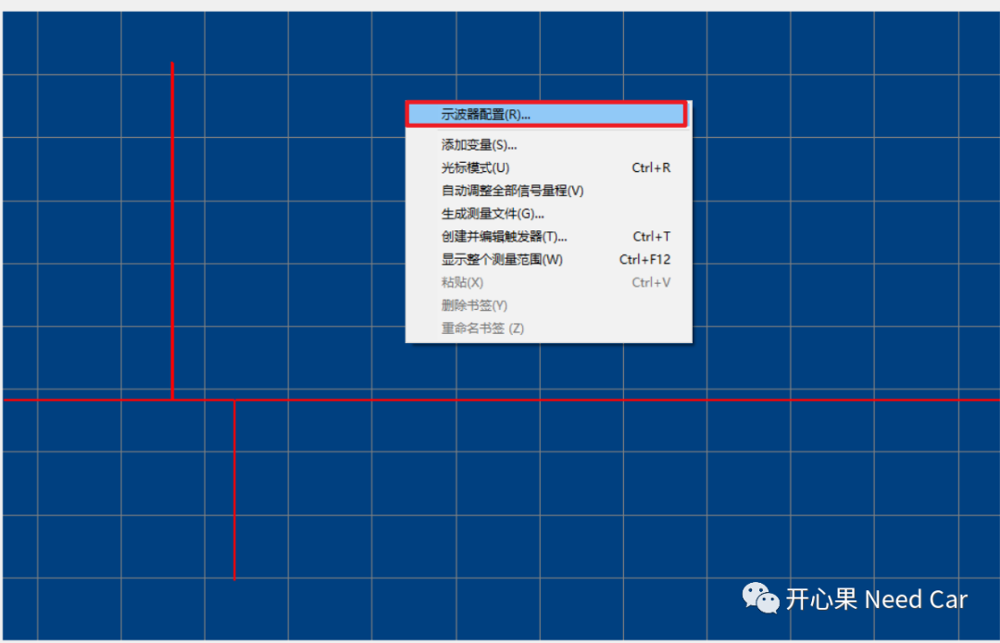
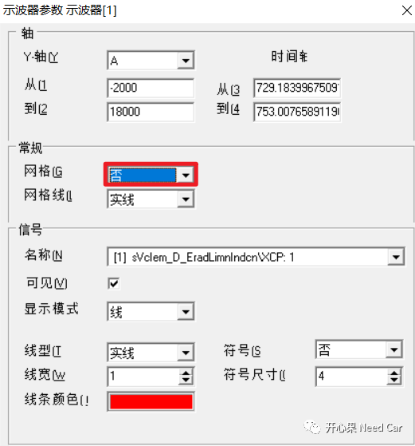
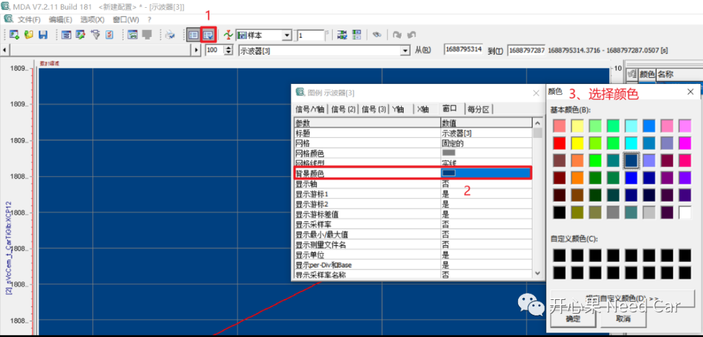
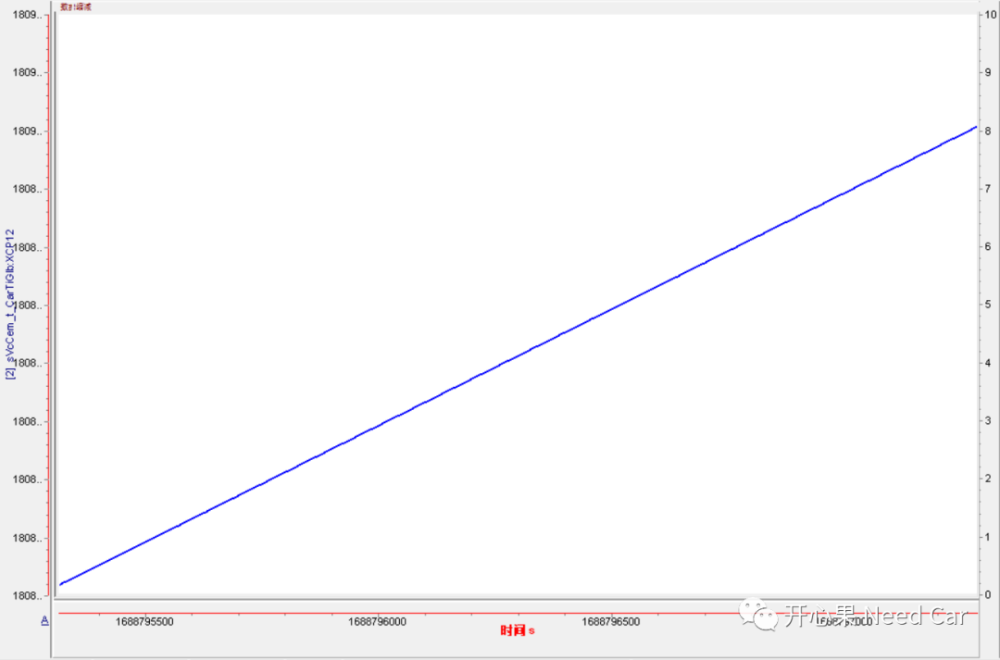
（二）信号属性配置
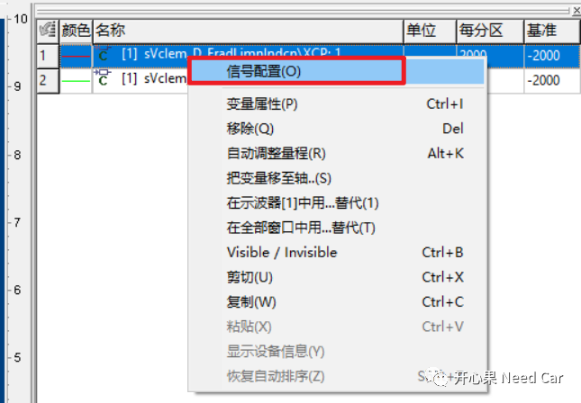
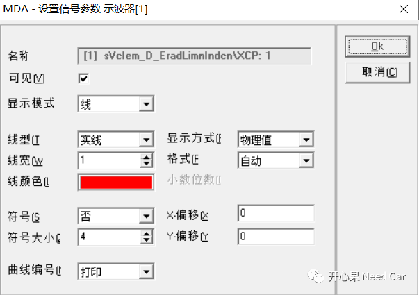
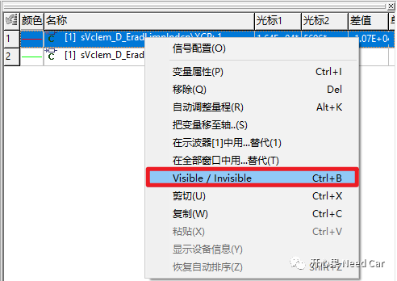
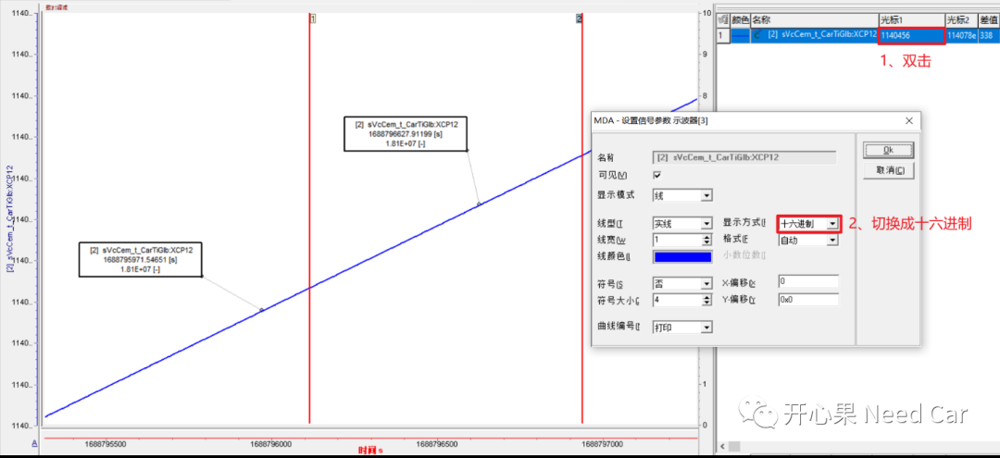
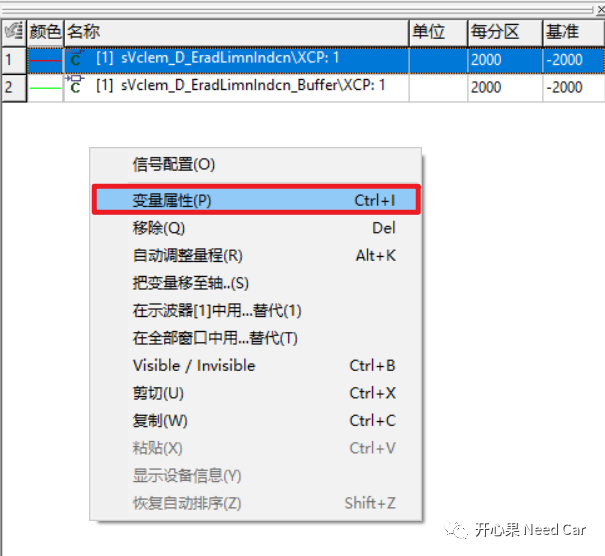
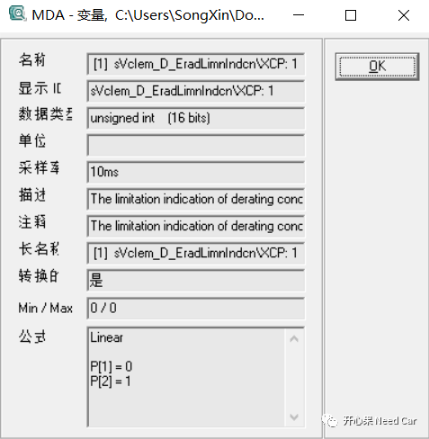
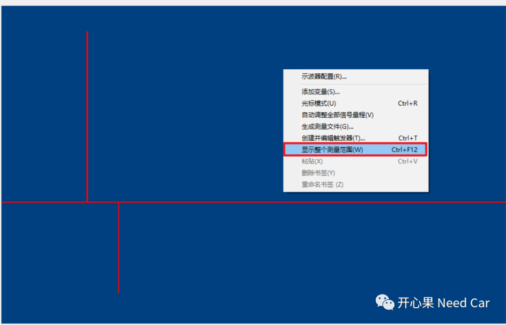
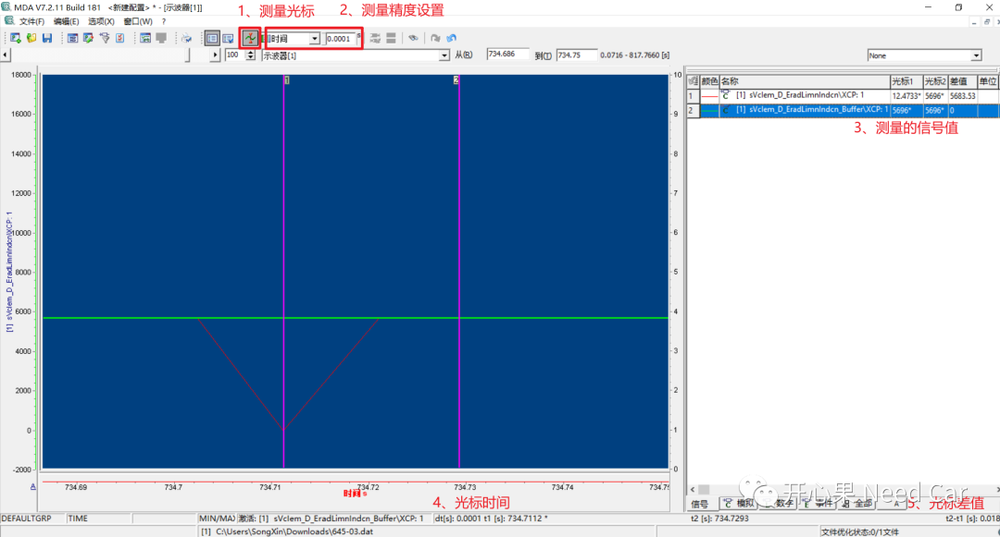
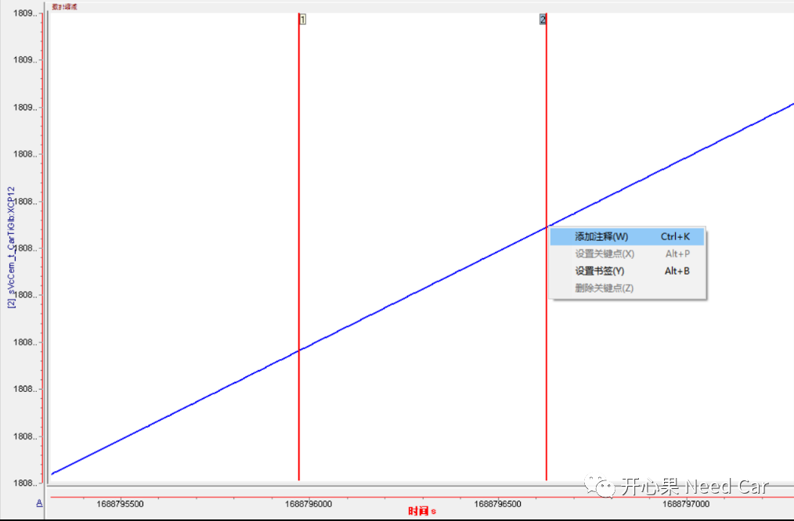
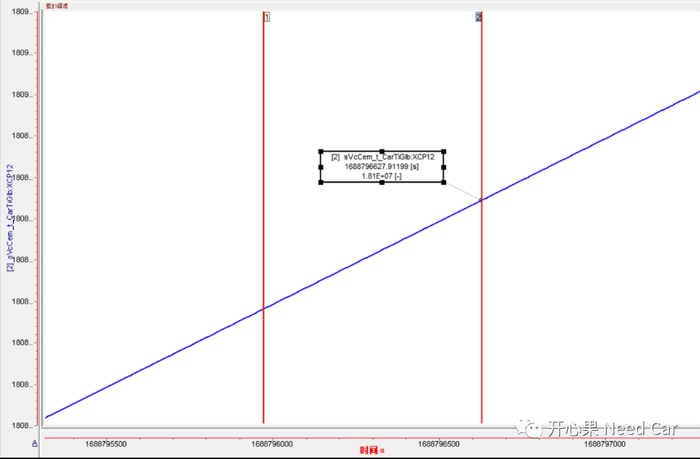
（六）添加新的观测信号
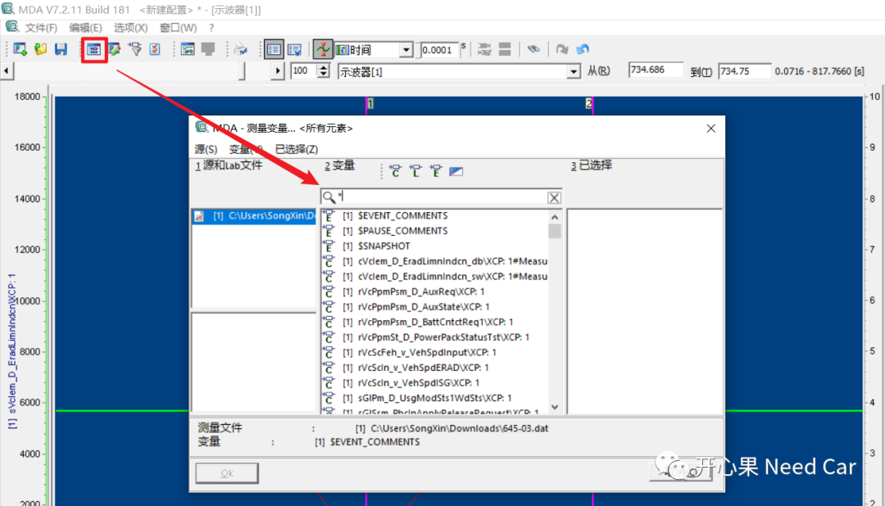
3、槽点
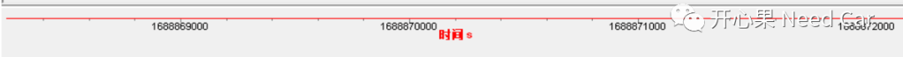
往期精彩回顾